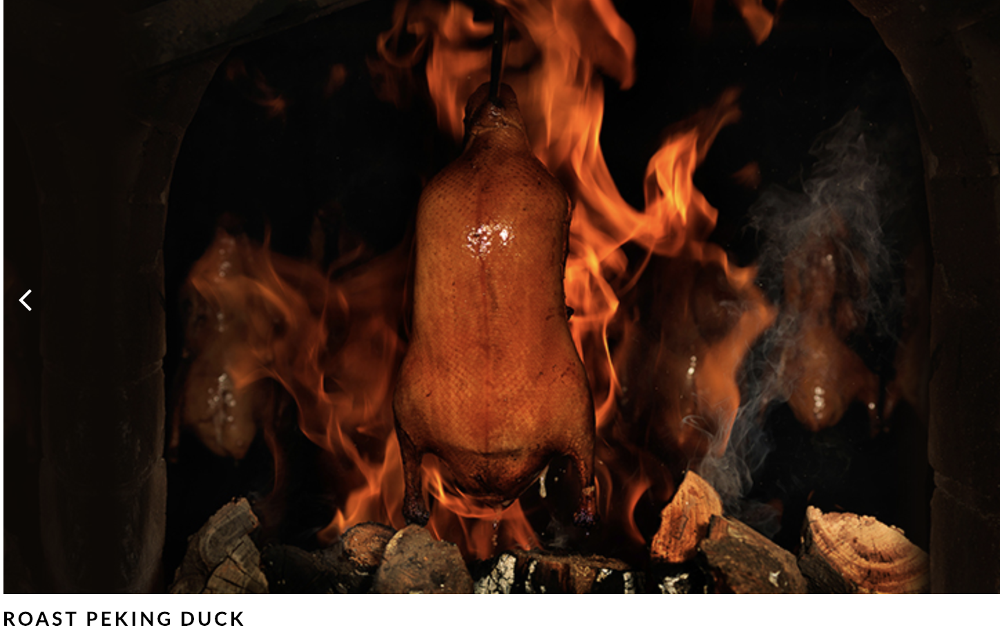

My favorite restaurant in NYC is Da Dung Restaurtant. It is famous for making roast duck in China, and it openned in the Midtown Manhattan in 2017. It was awarded one Michelin star.

This is the most famous dishes in this restaurant, the Roast Peking Duck. The skin of the duck is crispy, but the inner part is soft as marshmarrow. With the well-prepared sauce, people can taste the flavor of Haven.